East Africa Travel is delighted to get you practical information to inspire your next trip.
Check out our preview stories and be inspired to tour East Africa.
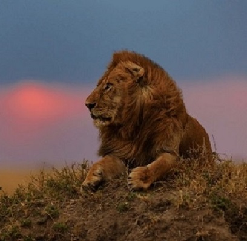
kenya preview
Experience the great wildebeest migration in the Maasai Mara on air or Road Safari
A popular sight to be observed between the months of July and October is the annual
migration of wildebeest, zebra, and Thomson’s gazelle to and from the Serengeti. Leopards,
lions and cheetahs can also be observed in the area. The untouched landscape is perfect
for wildlife to flourish and human numbers given access to the area is limited. All this
combined makes safari excursions to the Maasai Mara National Reserve an exceptional and
unforgettable experience.
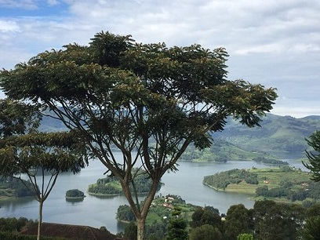
uganda preview
Like a pearl, Uganda is small but precious, Its luster is the bright greens of Africa’s highest
mountains, spectacular waterfalls, thick forests, and dramatic valleys. But the beating heart of
Uganda is its parks, the best locations for trekking to and viewing the rare mountain gorilla
which makes up almost half of all the mountain gorillas in the world
But Uganda is not all monkey business, at reserves like Kibale Forest and Queen Elizabeth
Park you’ll experience animals usually seen on the savannah such as giraffes, lions, buffaloes,
and elephants
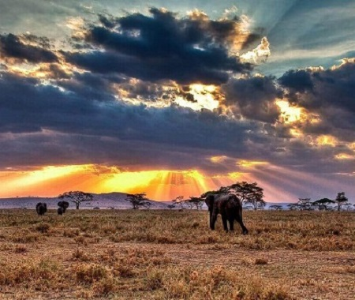
tanzania preview
Explore the blue-green marvel of the Ngorongoro Crater, known as the 8th wonder of the world and
home to 25,000 animals. Visit the alpine rainforests and perharps a canoe safari in Arusha National
Park. Also dont miss out on the elephants over 3000 of them in Tangarine National Park.
Everything about Tanzania is epic, snow-caped Mt. Kilimanjaro, the tallest peak in Africa.
Top Travel Destinations
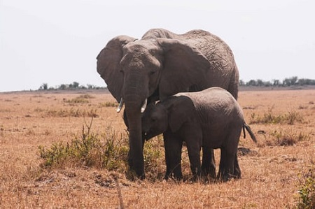
maasai mara national reserve
Located in South-Western Kenya along the Great Rift Valley adjacent to Serengeti National Park of Tanzania. The
attraction in Maasai Mara National Reserve are both nature and wildlife. The Wildebeest migration is
also witnessed here. A good short safari combination for those hoping to also see all these charismatic creatures
(THE BIG FIVE)(for lion,leopard,buffalo and elephant) and lake Nakuru (for black and white rhino).
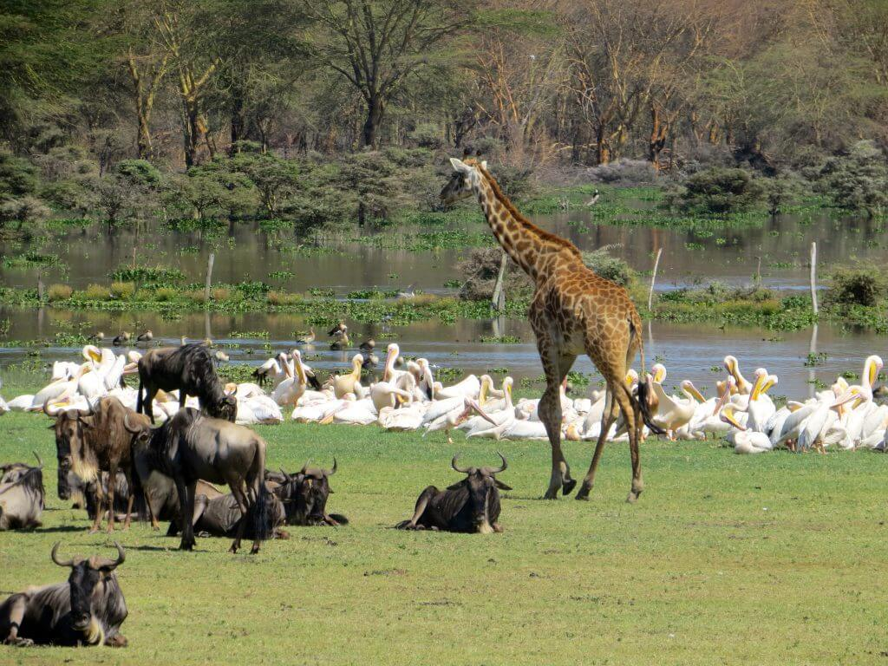
hell's gate national park
A small national park, it is known for its wide variety of wildlife and for its scenery.
However, the park has historically been an important home for the rare lammergeyer vultures.
ittle seen wildlife include lions, leopards, and cheetahs.
There are over 103 species of birds in the park, including, Verreaux's eagles, augur buzzard, and swifts.
The park is also home to several and small numbers of klipspringer antelope and Chanler's mountain reedbuck.
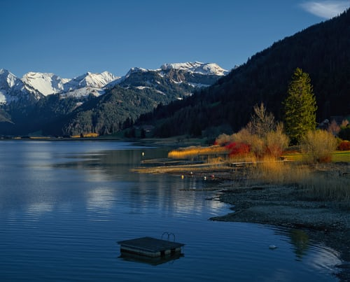
rift valley lakes
Rift Valley is home to eight lakes, of which three are freshwater and the rest alkaline.
Of the latter, the shallow soda lakes of the Eastern Rift Valley have crystallized salt turning the shores white and are
famous for the large flocks of flamingo that feed on crustaceans. The Rift Valley lakes are well known for the evolution
of at least 800 cichlid fish species that live in their waters. More species are expected to be discovered.
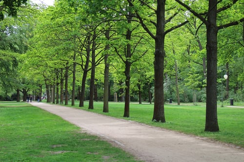
bwindi impenetrable national park
Richest populations of trees, the park's was once a refuge for species
during glaciationin the pleistocene epoch. The park's forests are afromontane, a rare vegetation type of the African
continent, the park is important for the coservation of afromomtane fauna. The park also is inhabited by about 600
individual mountain gorillas which makes up almost half of all the mountain gorillas in the world.
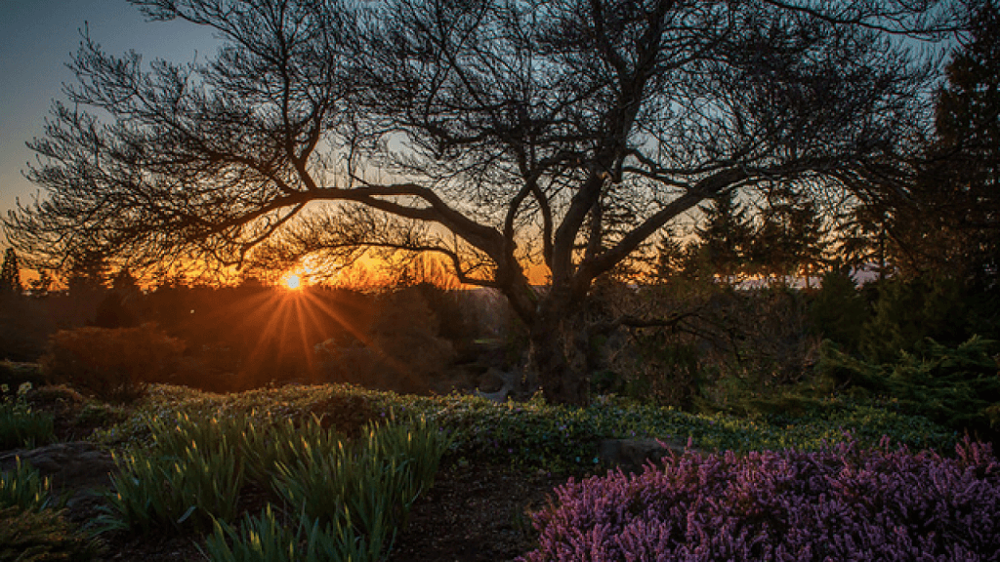
queen elizabeth national park
The Park incorporates dozens of mirror surfaced crater-lakes, salty and fresh water lakes.
There are over 95 mammal including 10 primate species (chimpanzees, L’Hoest monkey, Columbus, baboons), up to 20
predators (lion, leopard, spotted hyena, etc.), antelopes, buffaloes, hippos, elephants. More than 610 bird species
(probably the highest total for any national park in Africa, if not the world.
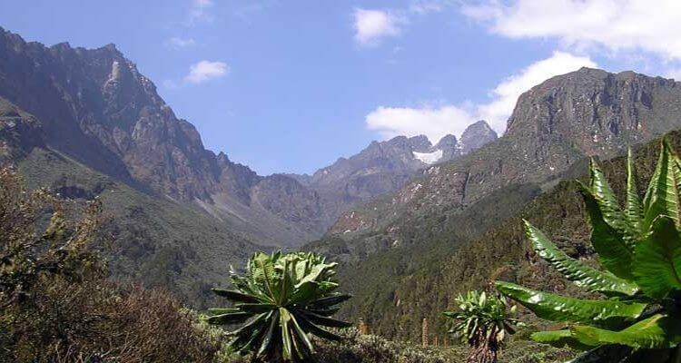
ruwenzori mountains
The Ruwenzori, are a range of mountains in eastern equatorial Africa, located on the border between Uganda and
the Democratic Republic of the Congo. Rivers fed by mountain streams form one of the sources of the
Nile, during the European exploration of Africa, the Ruwenzori came to be identified with the
legendary Mountains of the Moon, identified by the Greek scholar Ptolemy as the source of the River Nile.
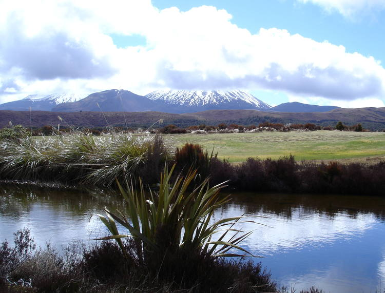
tangarine national park
The name of the park originates from the
Tarangire River that crosses the park. Tarangire River in Tangarine park is the primary source of fresh water for wild animals
during the annual dry season. The Tarangire Ecosystem is defined by the long-distance migration of
wildebeest and zebras. The oldest known elephant to give birth to twins is found in
Tarangrire. Also a haven for bird enthusiasts with more than 550 species.
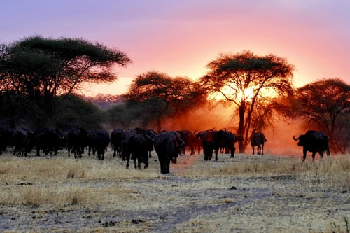
serengeti national park
Named for the Maasai word "siringet" (which translates roughly as "the place where the land runs on forever")
Serengeti National Park is one of the most iconic safari destinations on the African continent. It partly adjoins the Kenyan border and together with the Masai Mara National Reserve provides the backdrop for the annual Great Migration - considered
by many to be the planet's most impressive natural event.
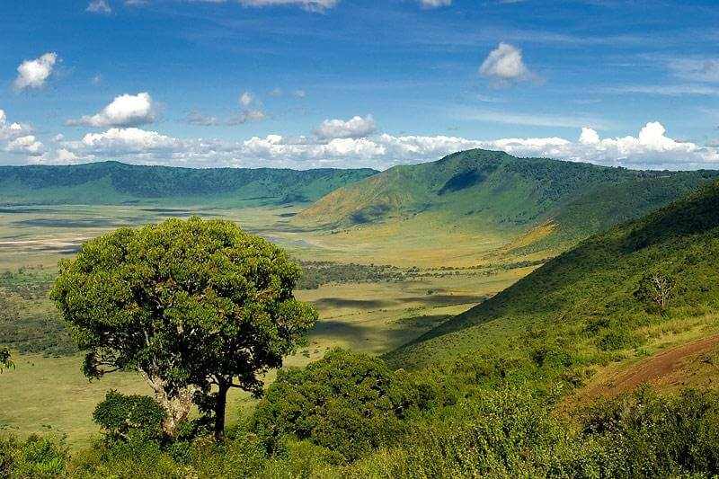
ngorongoro crater
The world's largest inactive, intact and unfilled volcanic caldera The crater, which formed when a large volcano exploded and collapsed on itself two
to three million years ago, The crater floor is 1,800 mtrs above sea level. The crater was voted by Seven Natural Wonders as one of the Seven
Natural Wonders of Africa in Tanzania in February 2013. The Ngorongoro volcano was active from about 2.45 to
2 million years ago